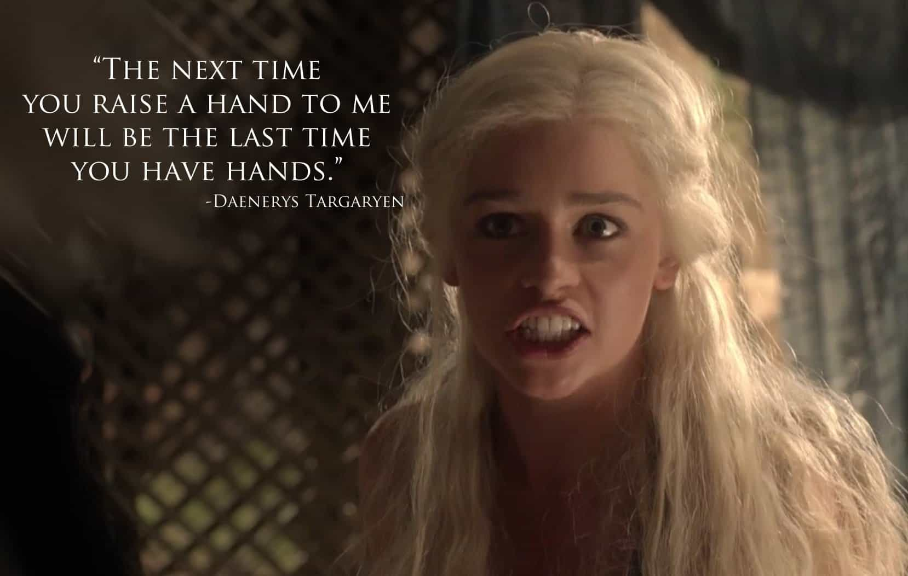

I’ve seen every episode of Game of Thrones. While immersed in the show’s dream of swords and breasts, my consciousness is mostly incapacitated, but periodically it jolts awake and I find myself thinking, “this is Dungeons and Dragons, except instead of playing I’m watching, and instead of being with people, I’m alone.” Perhaps I’m with my girlfriend but watching a serialized show with your girlfriend is a good way to feel alone.
Yet I keep watching because I sense a nutrition in the soap opera. Starving children eat the clay beneath their feet because it contains essential minerals. They haven’t analyzed the earth scientifically, of course, but ethereally they know they need what’s in the dirt. Post-modernity’s dirt is Game of Thrones. It may be filled with bacteria and disease and perhaps even crap, but it gives us what we need—what our psychologies crave.
George Martin, Comic Book Guy incarnate, is a history buff and so created the show as an homage to the War of the Roses. This was a 30-year period during the 15th Century in which the Lancaster and York families battled each other to reign on the English throne. The war probably seemed like a big deal at the time but it ended up being inconsequential. The fact that we can fixate on two families in a pointless gang war indicates two essential minerals for our psychology: family and values. Of course, family values.

The incessant stand-offs, boobs, and swords (which never not represent masculinity), would make us think the viewers are predominantly men. However, the most represented viewer demographic is single women located on the coasts (i.e., feminists). Except feminists, with their attachment disorder parading as independence, rebel against family values. Yet they need family values like they need Vitamin D. Game of Thrones bridges this gap of cognitive dissonance as a way for women to nourish themselves with something that’s supposed to disgust them. It’s a spoonful of sugar for the Huffington Post crowd.
The characters are constrained by family as their purpose is to fulfill the obligations of their family. But the obligation carries with it the security of structure. Postmodernity is the opposite. We have the cultural freedom to cut loose family ties, but we lack the personal freedom to become individuated. Without a properly formed psychology, we gradually enmesh ourselves in whoever happens to be nearby.
We equivocate and kowtow. Instead of definitive responsibilities, we have loose plans. We cater to middle managers. We’re free to do what we want, but we lack the psychological foundation to be free. The confines we create are invariably passive aggressive. Freedom means nothing without transcendence, which postmodernism’s mother, critical theory, has executed. Knowledge without responsibility is the bedrock of anxiety.
The character Daenerys is the feminist on the inside who gives the main viewer a foothold into the show. The man she loved, the man who could have made her happy, was placed in a world that would eventually kill him. She has since attracted only orbiters who pine for her but could never satisfy her. To fill the void of subservience she has three dragons that, not coincidentally, have the temperament of cats. They want to be left alone except on their terms. They give her the archetype of an alpha whose attention she can use her femininity to appease. In the meantime, her neglected libido drives her to conquer cities through power she’s gained for no other reason than she’s accidentally magic.
Without boundaries that would limit a lesser being, Daenerys develops a savior complex, and so feels the savior’s pain of being forsaken. Like a woman in the modern-day nonprofit, she tries to help people who don’t love her, with haphazard results. It keeps her busy, and there have been worse existences, but no one would diagnose Daenerys a happy woman.
The feminist’s cubicle is makeshift, and worthy men become even more scarce as she ages, but she has outlets for her nature. Instead of organizing her husband’s finances she organizes her boss’s finances. Instead of taking trips with her family, she attends company retreats. Instead of making dinner for dependents, she goes out to dinner with codependents. She convinces herself it’s progress because self-deception knows no limits. But the truth of her situation is sporadically inescapable via the panic attack: no one loves her and she doesn’t love anyone.
For the male mind, to be released from family is unfortunate, but manageable. We still have our callings of science and philosophy and wealth accumulation. But for the female mind, to live for itself is an empty motion. The feminine achievement is the association. Without relationships, there can be no meaning, no reality.
Modern woman has not only forgotten about the water of feminism that surrounds her, but she’s anesthetized to the drowning. Then a television show comes out that subjugates women to the family and the code of masculinity, and she glues herself to it. It’s the opening scene in every dystopian novel: the hero stumbles across a relic from the past enlightenment.
The penultimate season airs this weekend. I cannot make decent predictions about what will happen because I have terrible instincts for that sort of thing, but I know what I would say if I were in that writer’s room: take out the Iron Throne, the Platonic Good, the ultimate ideal everyone is after. We know what happens when characters have something to fight for, now let’s find out what happens when the structure is removed. How will people act when there is no more code? Without a value, what could possibly be the need for the family?
Then the show will become, like all great art, a full-length mirror for society. At least then I’ll be able to convince myself I don’t regret watching it.
Read More: Has Game of Thrones Lost its Magic?